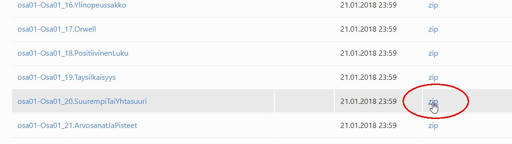

Tehtävän 20 lataamisessa tapahtuu virhe, minkä vuoksi tehtävä on lisättävä käsin. Lataa koko tehtävä zip-pakettina osoitteesta target=”_blank” https://tmc.mooc.fi/org/hamk_liikenne/courses/274
Tarkasta NetBeansista, mihin kurssin materiaalit on talletettu.
Pura lataamasi paketti tehtävän 20 päälle, korvaa olemassa olevat tiedostot
Tämän jälkeen voit avata, suorittaa ja palauttaa projektin normaalisti.